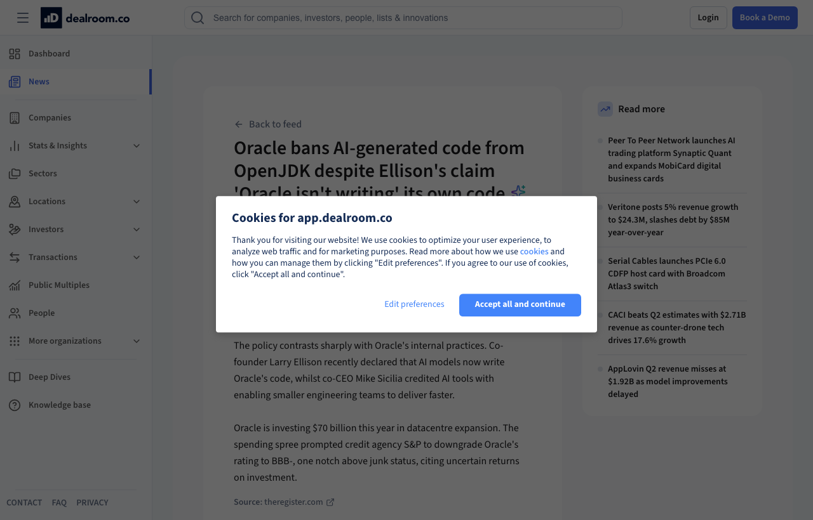

10 dealroom.co 게시일 2026.08.07
Oracle, OpenJDK에 AI 생성 코드 금지

Oracle이 OpenJDK 기여 정책에서 AI 생성 코드를 금지했다. 금지 범위는 저장소와 pull request, 다른 프로젝트 채널까지 포함한다. 이유는 안전성, 보안, 지식재산권 위험이다. 다만 개발자가 개인적으로 LLM을 써서 디버깅하거나 코드를 검토하는 일은 허용했다.
핵심 브리핑
Oracle은 OpenJDK 기여물에 AI 생성 코드를 넣지 못하게 했다. 금지 이유로 안전성, 보안, 지식재산권 위험을 들었다. 개발자는 LLM을 비공개로 디버깅과 리뷰에 쓸 수 있지만, AI가 생성한 결과물은 저장소와 pull request, 다른 프로젝트 채널에 올릴 수 없다.
이 정책은 Oracle 내부 발언과 대비된다. Larry Ellison은 최근 AI 모델이 Oracle의 코드를 쓰고 있다고 말했다. 공동 CEO Mike Sicilia는 AI 도구 덕분에 더 작은 엔지니어링 팀이 더 빨리 결과를 낸다고 평가했다.
Oracle은 올해 데이터센터 확장에 $70 billion을 투자하고 있다. S&P는 투자 수익의 불확실성을 이유로 Oracle의 신용등급을 BBB-로 낮췄다. BBB-는 투기등급 바로 위 단계다.
맥락 읽기
이번 조치는 AI 코딩 도구를 전면 금지한 정책이 아니다. 개인 작업에서의 디버깅과 리뷰는 허용했고, 공식 기여 채널에 들어오는 산출물만 막았다. Oracle은 공개 오픈소스 저장소에서 검증 책임과 권리 문제를 더 엄격하게 본 셈이다.
같은 회사 안에서도 내부 개발과 외부 기여의 규칙이 다를 수 있다는 점이 드러났다. 내부에서는 생산성 도구로 쓰더라도, 공개 프로젝트에서는 코드 출처와 검토 가능성을 더 강하게 요구할 수 있다.
업계의 움직임
아직 공개된 반응은 확인되지 않았다.
시사점과 체크포인트
우리 회사도 AI 코딩 도구 정책을 저장소 성격별로 나눠야 한다. 내부 업무 시스템과 오픈소스 기여 저장소를 같은 규정으로 묶으면 운영이 꼬일 수 있다. 외부 반출 코드에는 생성 여부와 출처 확인 절차가 필요하다.
검토할 팀은 개발조직, 오픈소스 거버넌스 담당, 정보보호팀, 법무팀이다. 확인할 질문도 분리해야 한다. AI가 만든 코드를 어디까지 허용할지, 리뷰 기록을 어떻게 남길지, 외부 기여 시 라이선스와 저작권 위험을 누가 확인할지 정해 둘 필요가 있다. 기사만으로는 실제 판별 방식과 예외 규정은 확인되지 않았다.
주요 용어
원문 정보
제목: Oracle bans AI-generated code from OpenJDK
게시일: 2026.08.07
출처 URL: https://app.dealroom.co/news/feed/oracle-bans-ai-generated-code-from-openjdk-despite-ellison-s-claim-oracle-isn-t-writing-its-own-code